Formas de envio e cotação de frete
Formas de envio é a configuração em que você define como os pedidos são expedidos e como o frete é cotado no ERP da Olist. Nela você consulta as formas já cadastradas, inclui uma nova forma, informa o remetente das etiquetas e as credenciais de rastreamento, adiciona formas de frete e, para os Correios, configura contrato, cotação e logística reversa.
A tela fica em Configurações > Configurações ERP > Vendas > Formas de envio.
Importante
- Preencha o endereço do remetente nas etiquetas somente se ele for diferente do endereço da empresa.
- A senha de acesso à API dos Correios deve ser gerada no painel do Correios Web Services.
- A logística reversa exige um usuário e uma senha especiais, diferentes dos dados do Sigep WEB e das credenciais da interface de logística reversa.
- Gateway logístico lista apenas Não possui e os gateways já configurados na conta. A tela não cria o gateway.
- Com Utilizar outro CNPJ marcado, a autenticação usa outro CNPJ.
- Com Utiliza DC-e em Sim, expedições sem nota fiscal exigirão DC-e via Correios.
- Utilizar as dimensões mínimas vale apenas para cotações feitas pelas APIs de frete.
- Nome do cliente é usado apenas na impressão da chancela.
- As preferências valem para pedidos de venda e notas fiscais.
- Nenhum campo destes formulários aparece marcado como obrigatório.
Instruções
Consultar as formas de envio
-
Acesse Configurações > Configurações ERP > Vendas > Formas de envio.
-
Use a pesquisa e o filtro de situação para localizar a forma. A lista mostra Descrição, Tipo logística e Gateway logístico e é paginada.

-
Na linha de uma forma habilitada, abra o menu de ações e clique em Desabilitar para desabilitar a forma.
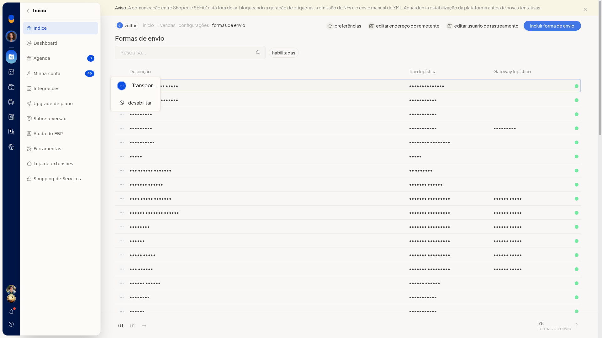
Editar o endereço do remetente
-
Na lista de Formas de envio, clique em Editar endereço do remetente.
-
No painel Endereço do remetente nas etiquetas, preencha CEP, Município, UF, Endereço, Bairro, Número e Complemento somente se o remetente das etiquetas for diferente do endereço da empresa. Em UF, escolha Selecione, uma UF brasileira ou EX. O CEP usa o formato 12.345-678.


-
Clique em Salvar. Fechar encerra o painel sem gravar.
Editar o usuário de rastreamento
-
Na lista de Formas de envio, clique em Editar usuário de rastreamento.
-
No painel Usuário de Rastreamento, informe Usuário e Senha.

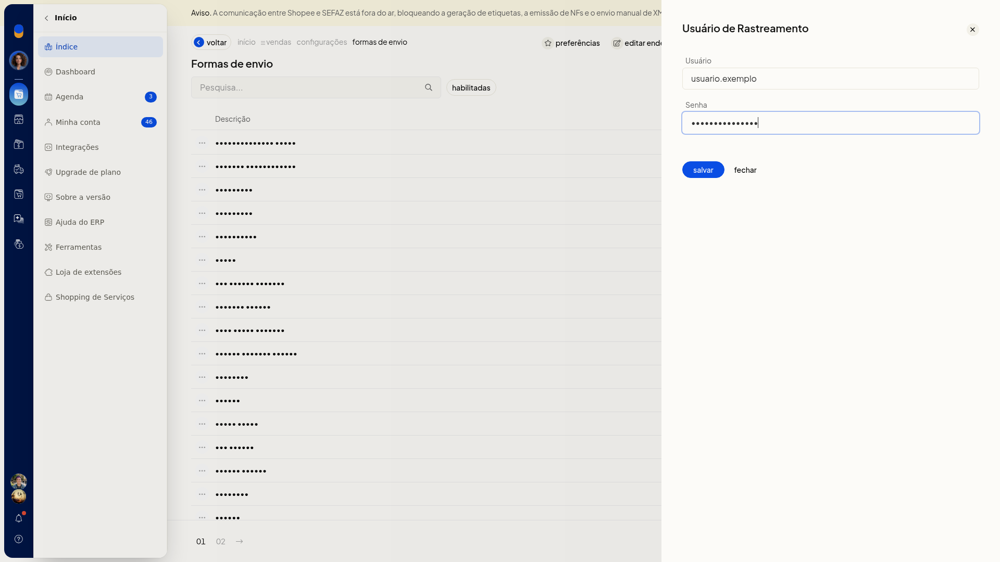
-
Clique em Salvar. Fechar encerra o painel sem gravar.
Incluir uma forma de envio
-
Na lista, clique em Incluir forma de envio.
-
Em Tipo logística, selecione o tipo. As opções são Correios, Transportadora, Mercado Envios, Correios Log, Americanas Entrega, Jadlog, Total Express, Olist, Gateway logístico, Customizado, Magalu Entregas, Magalu Fulfillment, Shopee Envios, Netshoes Entregas, CB Entrega, AliExpress Envios, Madeira Envios, Conecta Lá Etiquetas, Loggi, Amazon DBA, Magalu Entregas por Netshoes, Shein Envios, Mandaê (beta), Kwai Envios, Envios da Olist, Beleza Envios, Forma Teste (beta), TikTok Shipping, Envios do HUB e Posta Ja.
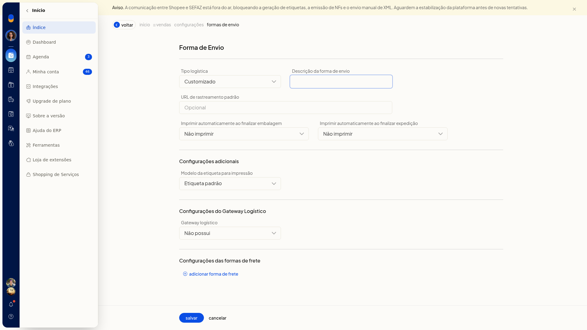
-
Informe Descrição da forma de envio. URL de rastreamento padrão é opcional.
-
Em Imprimir automaticamente ao finalizar embalagem e em Imprimir automaticamente ao finalizar expedição, escolha Não imprimir, DANFE ou Etiqueta de envio.
-
Em Modelo da etiqueta para impressão, escolha Etiqueta padrão ou Minha transportadora.
-
Em Gateway logístico, escolha Não possui ou um gateway já configurado na conta.
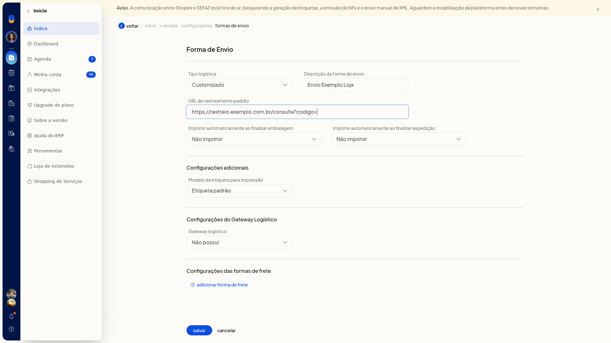
-
Para incluir frete, siga Adicionar uma forma de frete. Para Correios, siga Configurar Correios.
-
Clique em Salvar. Cancelar descarta o formulário e volta à lista.
Configurar Correios
-
Em Incluir forma de envio, selecione Correios em Tipo logística.
-
Informe Descrição da forma de envio. URL de rastreamento padrão permanece opcional.

-
Defina Possui contrato como Sim ou Não e informe o Transportador.
-
Marque Utilizar outro CNPJ se a autenticação deve usar outro CNPJ. O campo CNPJ usa o formato 00.000.000/0001-91.
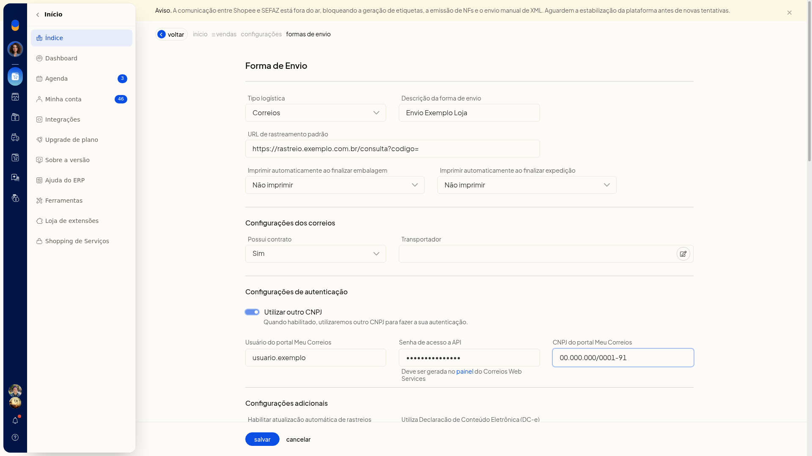
-
Preencha Usuário do portal Meu Correios e Senha de acesso a API. Gere essa senha no painel do Correios Web Services.

-
Ajuste Habilitar atualização automática de rastreios (Não ou Sim) e Utiliza DC-e (Sim ou Não).
-
Informe Número do cartão de postagem, Unidade de postagem e Diretoria regional (DR). Em Diretoria regional (DR), escolha Selecione ou uma diretoria regional dos Correios, como DR - SÃO PAULO ou DR - SÃO PAULO INTERIOR.
-
Marque Utilizar data da expedição como data prevista de postagem se quiser usar essa data. Informe Código administrativo, Número do contrato, Ano do contrato e Nome do cliente.

-
Na cotação, defina Utilizar as dimensões mínimas como Não ou Sim. Essa opção vale apenas para cotações pelas APIs de frete.
-
Marque Agrupar produtos por embalagem para usar as embalagens da conta.
-
Para valor declarado abaixo de R$ 25,63, escolha Não utilizar valor declarado ou a opção que aplica o mínimo de R$ 25,63.
-
Para Mini Envios abaixo de R$ 12,82, escolha não utilizar ou aplicar o mínimo de R$ 12,82.
-
Em Prazo de postagem (Envio convencional), informe o prazo. O máximo é 90 dias. O valor inicial é 14.

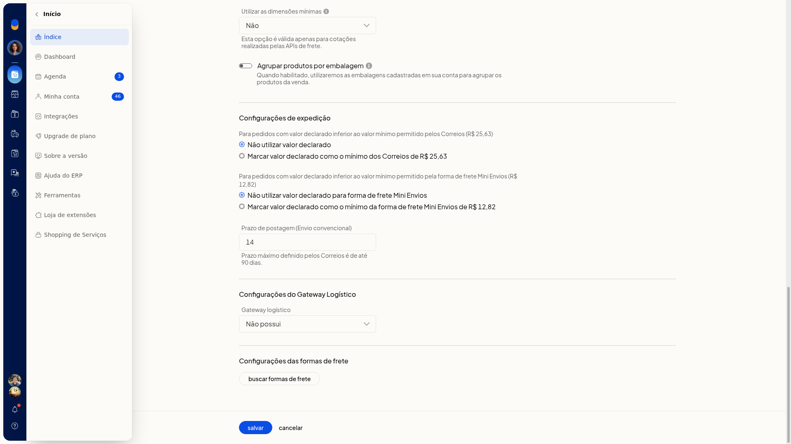
- Expanda Logística Reversa e siga a seção seguinte, se precisar. Use Buscar formas de frete para localizar os serviços dos Correios.
- Clique em Salvar. Cancelar volta à lista sem gravar.
Informar a logística reversa
-
No formulário de Incluir forma de envio, em Logística Reversa, clique em exibir.
-
Leia o aviso: é necessário um usuário e uma senha especiais, diferentes dos dados do Sigep WEB e do usuário e da senha da interface de logística reversa.
-
Acesse o link da logística reversa para conferir se as credenciais estão corretas. O link abre, em uma nova aba, o serviço público de logística reversa dos Correios.

-
Preencha Usuário Logística Reversa e Senha Logística Reversa.
-
Em Prazo de postagem (Logística reversa), informe um número inteiro de 1 a 90. O valor inicial é 14. A validade da etiqueta definida pelos Correios é de até 90 dias.
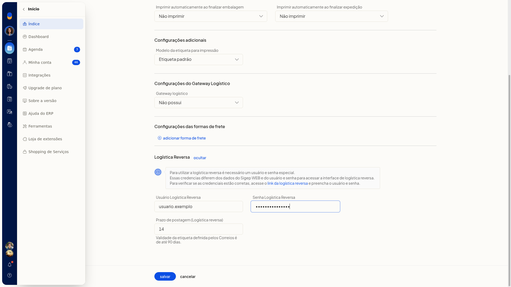
-
Clique em Salvar no formulário da forma de envio. Cancelar descarta o formulário.
Adicionar uma forma de frete
-
No formulário da forma de envio, em Configurações das formas de frete, clique em Adicionar forma de frete.
-
Em Configuração da forma de frete, informe Descrição, Código, Tipo de entrega e Transportador.
-
Em Tipo de entrega, escolha Não definida, Normal, Expressa, Agendada, Econômica, Super Expressa ou Retirada em mãos.
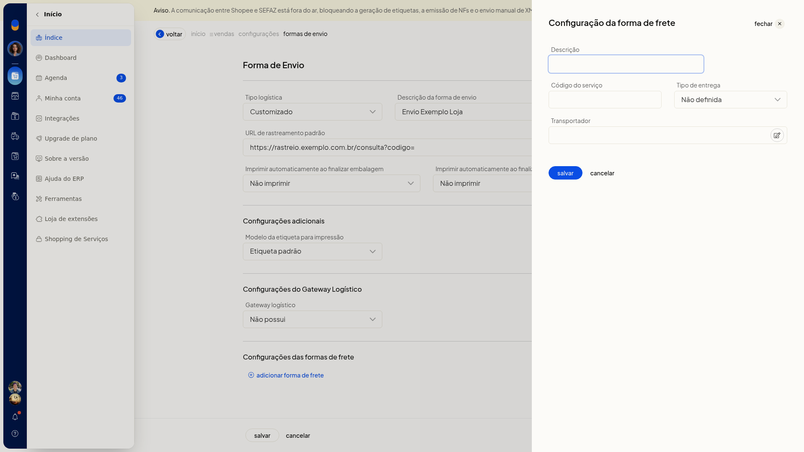
-
Em Transportador, informe um nome já cadastrado. Se o nome não existir, a tela mostra cadastro não encontrado e permite abrir o cadastro rápido.
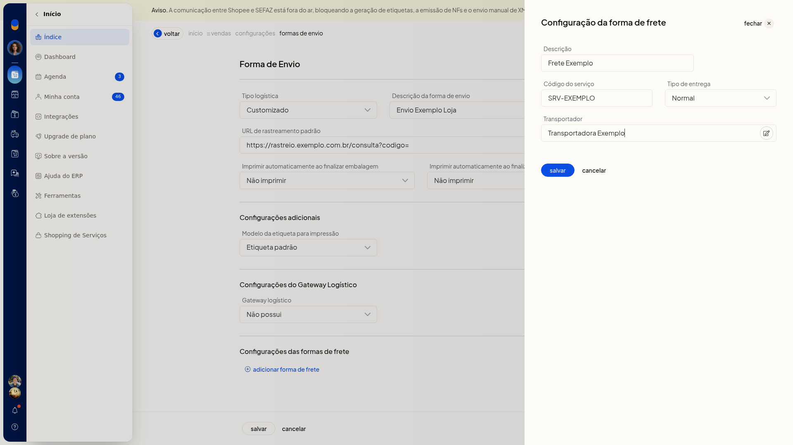
-
Clique em Salvar na configuração da forma de frete. Cancelar fecha essa configuração sem incluí-la e mantém o formulário da forma de envio aberto.
Cadastrar o transportador no cadastro rápido
-
A partir de Transportador na forma de frete, abra o cadastro rápido quando o nome não for encontrado.
-
Preencha Nome e Código.
-
Em Tipo da Pessoa, escolha Pessoa Física, Pessoa Jurídica, Estrangeiro ou Estrangeiro no Brasil.
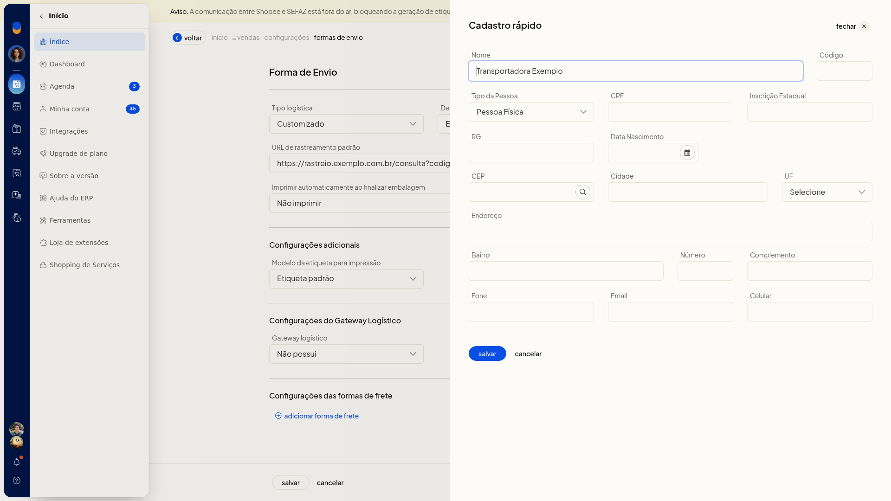
-
Para pessoa física, preencha CPF, IE, RG, Data Nascimento, CEP, Cidade, UF, Endereço, Bairro, Número, Complemento, Fone, Email e Celular.
-
Use estes formatos: CPF 000.000.000-00, Data Nascimento mm/dd/aaaa, CEP 12.345-678, Fone (11) 98765-4321 e Celular (11) 91234-5678. Se a cidade não estiver cadastrada, a tela mostra Cidade não encontrada.

-
Clique em Salvar no cadastro rápido. Cancelar fecha o cadastro sem gravar o transportador.
Buscar formas de frete dos Correios
-
Com Tipo logística em Correios, role até Buscar formas de frete e clique no botão.
-
No modal Adicionar formas de frete, confira a lista de serviços.
-
Se o modal mostrar Problema ao obter formas de frete, clique em Tentar novamente. Sem credenciais de Correios gravadas, a busca não lista serviços.
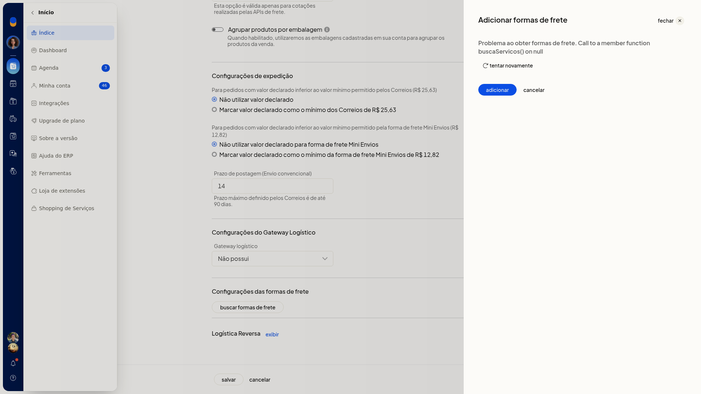
-
Clique em Adicionar para incluir os serviços. Cancelar fecha o modal sem adicionar serviços e sem gravar a forma de envio.
Definir a forma de envio padrão
-
Na lista de Formas de envio, clique em Preferências.
-
Em Configurar forma de envio padrão, leia a ajuda: a configuração é válida para pedidos de venda e notas fiscais.

-
Em Forma de envio padrão, escolha Não definida ou uma forma já cadastrada na conta.
-
Em Transportadora padrão, busque um transportador do cadastro. Um nome inexistente mostra Cadastro não encontrado.
-
Em Forma de Frete padrão (Devoluções), escolha Não definida ou uma opção de envio para devoluções composta pelas formas já cadastradas.
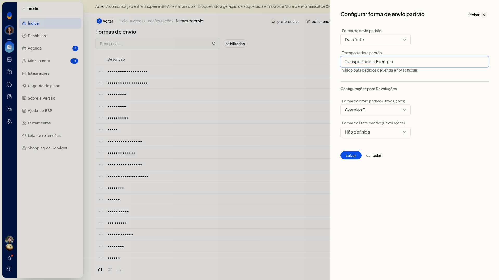
-
Clique em Salvar. Cancelar descarta a alteração e não grava a preferência.
Informações adicionais
- Fechar nos painéis de endereço do remetente e de usuário de rastreamento encerra sem gravar.
- Cancelar na inclusão da forma de envio volta à lista sem criar a forma.
- Cancelar na configuração da forma de frete fecha essa configuração e mantém o formulário da forma de envio aberto, sem incluir o frete.
- Cancelar no cadastro rápido fecha o cadastro sem criar o transportador.
- Cancelar no modal Adicionar formas de frete fecha o modal sem adicionar serviços.
- Cancelar em Preferências descarta a alteração da forma padrão.